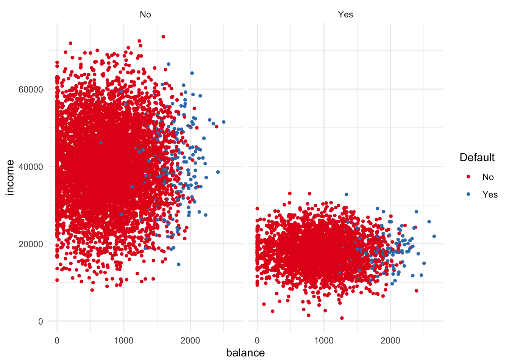

Chapter 5 Classification
5.1 Book
5.1.1 Regression trees
The final regions of a tree are known as terminal nodes or leaves. Decision trees are typically drawn upside-down, with the leaves at the bottom. The points along the tree where the predictor space is split are referred to as internal nodes. We refer to the segments of the trees that connect the nodes as branches. An advantage of trees over other regression methods is that they have a nice graphical representation and that they are relatively easy to interpret.
Prediction via stratification of the feature space. Roughly speaking, there are two steps involved in building a regression tree.
- We divide the predictor space - that is, the set of possible values for \(X_1, X_2, \dots, X_p\) - into \(J\) distinct and non-overlapping regions \(R_1, R_2, \dots, R_J\).
- For every observation in region \(R_j\), we make the same prediction, which is simply the mean of the response values for the training observations in \(R_j\).
In theory, we could choose any shape for the regions, but we choose to divide the predictor space into high dimensional rectangles, or boxes, for simplicity and interpretation. The goal then is to find the boxes \(R_1, \dots, R_J\) that minimize the RSS, given by \[ \sum^J_{j=1} \sum_{j \in R_J} (y_i - \hat{y}_{R_j})^2. \] Unfortunately, it is computationally infeasible to consider every possible partition of the feature space into \(J\) boxes. For this reason, we take a top-down, greedy approach that is known as recursive binary splitting. The approach is top-down because it begins at the top of the tree (where all observations belong to a single region) and then successively splits the predictor space; each split is indicated via two new branches further down the tree. It is greedy because at each step of the tree building process, the best split is made at that particular step, rather than looking ahead and picking a split that will lead to a better tree in some future step.
We first select the predictor \(X_j\) and the cutpoint \(s\) such that splitting the predictor space into the regions \(\{X|X_j < s\}\) and \(\{X|X_j \geq X_j\}\) leads to the greatest reduction in RSS (considering all predictors \(X_1, \dots, X_p\) and all possible cutpoints). We repeat this process looking for the best predictor and best cutpoint in order to split the data further so as to minimize the RSS within each of the resulting regions, so we only split one of the two previously identified regions. This process is continued until some stopping criterion is reached.
5.1.2 Tree pruning
The process described above is likely to overfit the data, leading to poor test set performance, because the resulting tree might be too complex. A smaller tree with fewer splits (fewer regions) might lead to lower variance and a better interpretation at the cost of a little bias. A possible solution then is to build the tree only as long as the decrease in the RSS due to each split exceeds some (high) threshold. This strategy will result in smaller trees, but is too short-sighted because a seemingly worthless split early on might be followed by a very good split later on.
A better strategy is to grow a very large tree \(T_0\) and then prune it back in order to obtain a subtree. The goal is to select a subtree that leads to the lowest test error rate. Given a subtree, we could use the validation set or cross-validation approach, but this is not feasible for every possible subtree. Instead, we need a small set of subtrees for consideration.
5.1.3 Cost-complexity pruning / weakest-link pruning
Rather than considering every possible subtree, we consider a sequence of trees indexed by a non-negative tuning parameter \(\alpha\). For each value of \(\alpha\) there corresponds a subtree \(T \subset T_0\) such that \[ \sum^{|T|}_{m=1} \sum_{x_i \in R_m} (y_i - \hat{y}_{R_m})^2 + \alpha |T| \] is as small as possible. Here \(|T|\) indicates the number of terminal nodes of the tree \(T\), \(R_m\) is the rectangle corresponding to the \(m^{th}\) terminal node and \(\hat{y}_{R_m}\) is the predicted response associated with \(R_m\).
The fitting parameter \(\alpha\) controls the trade-off between the subtrees complexity and its fit to the training data. When \(\alpha = 0\), subtree \(T\) will equal \(T_0\). As \(\alpha\) increases, there is a price to pay for having a tree with many terminal nodes, and so this equation will tend to be minimized for a smaller subtree. As we increase \(\alpha\), branches get pruned from a tree in a nested and predictable fashion, so obtaining the whole sequence of subtrees of \(\alpha\) is easy. We can select a value for \(\alpha\) using a validation set or using cross-validation. We then return to the full dataset and obtain the subtree corresponding to \(\alpha\).
5.1.4 Building a regression tree
Use recursive binary splitting to grow a large tree on the training data, stopping only when each terminal node has fewer than some minimum number of observations.
Apply cost-complexity pruning to the large tree in order to obtain a sequence of best subtrees as a function of \(\alpha\).
Use \(K\)-fold cross-validation to choose \(\alpha\). That is, divide the training observations into \(K\) folds. For each \(k = 1, \dots, K\)
3.1 Repeat steps 1 and 2 on all but the \(k^{th}\) fold of the training data.
3.2 Evaluate the MSE on the data in the validation set - fold \(k\).
Return the subtree from step 2 corresponding to optimal \(\alpha\).
5.1.5 Trees versus linear models
If the relationship between the features and the response is well approximated by a linear model, a linear regression model will likely outperform a regression tree. If there instead is a highly nonlinear and complex relationship, decision trees may outperform classical approaches. The relative performance of tree-based and classical approaches can be assessed by estimating the test error, using cross-validation or the validation set approach. Sometimes, a tree might be preferred for the sake of interpretability and visualization.
Advantages and disadvantages of trees
- Pro: Trees are easy to explain (easier than linear regression).
- Pro: Trees mirror human decision making more closely than classical regression and classification approaches.
- Pro: Easily interpreted, even by non-experts, and displayed graphically.
- Pro: Can handle categorical predictors without needing dummies.
- Con: Generally less predictive accuracy than other approaches.
- Con: Trees can be very non-robust (i.e., a slight change in the data can yield dramatically different results.)
5.1.6 Bagging
Decision trees suffer from high variance (splitting the data into two parts could yield very different results). Bootstrap aggregation / bagging is a general purpose procedure for reducing the variance of a statistical learning method. Recall that given a set of \(n\) independent observations \(Z_1, \dots, Z_n\), each with common variance \(\sigma^2\), the variance of the mean \(\bar{Z}\) of the observations is given by \(\sigma^2/n\). In other words, averaging a set of observations reduces the variance. A natural way to reduce the variance and hence increase the prediction accuracy of a method is to take many training sets, build a separate prediction model using each training set and average the resulting predictions. That is, we calculate \(\hat{f}^1(x), \hat{f}^2(x), \dots, \hat{f}^B{x}\) using \(B\) separate training sets and average them in order to obtain a single, low-variance statistical learning model, given by \[ \hat{f}_{\text{avg}}(x) = \frac{1}{B}\sum^B_{b=1}\hat{f}^b(x). \] While bagging can improve predictions for many regression methods, it is particularly useful for decision trees. For regression trees, bagging entails constructing \(B\) regression trees using \(B\) bootstrapped training sets, and average the resulting predictions. These trees are grown deep, and are not pruned, so each individual tree has high variance, but low bias. Averaging \(B\) trees reduces the variance. Bagging gives impressive improvements in accuracy by combining hundreds or thousands of trees into a single procedure. When \(Y\) is qualitative, there are a few possible approaches of which the simplest is to take the majority vote: the overall prediction is the most commony occuring class among the \(B\) predictions.
5.1.7 Out-of-bag error estimation
There is a very straightforward way to estimate the test error of a bagged model, without the need to perform cross-validation or the validation set approach. On average, each bagged tree makes use of around two-thirds of the observations. The remaining one-third of the observations not used to fit a given bagged tree are referred to as the out-of-bag (OOB) observations. We can predict the response for the \(i^{th}\) observation using each of the trees in which the observation was OOB, which will yield approximately \(B/3\) predictions for observation \(i\). In order to obtain a single prediction for the \(i^{th}\) observation, we can average these predicted responses (regression) or take a majority vote (classification), leading to a single OOB prediction for observation \(i\). Doing this this for all \(n\) observations, we can calculate the overall OOB MSE (regression) or OOB classification error (classification). The resulting OOB error is a valid estimate of the test error for the bagged model. With \(B\) sufficiently large, the OOB error is virtually equivalent to the LOOCV error. The OOB approach for estimating the test error is particularly convenient when performing bagging on large datasets for which cross-validation would be computationally onerus.
5.1.8 Variable importance measures
Bagging typically results in improved accuracy over prediction using a single tree. However, it can be difficult to interpret the resulting model. After bagging, we can no longer represent the results using a single tree. One can obtain an overall summary of the importance of each predictor using the RSS (regression) or the Gini index (classification).
- Record the total amount that the RSS is decreased due to splits over a given predictor, averaged over all \(B\) trees. So a large value indicates an important predictor.
- Add up the total amount that the Gini index is decreased by splits over a given predictor, averaged over all \(B\) trees.
We can displayvariable importance graphically using the relative decrease of each predictor to the predictor that is most influential.
5.1.9 Random forests
Random forests provide an improvement over bagged trees by a small tweak that decorrelates the trees. As in bagging, we vuild \(B\) trees on bootstrapped samples, but when building these trees, each time a split in a tree is considered, a random sample of \(m\) predictors is chosen as split candidates from all \(p\) predictors. The split is allowed to use only those \(m\) predictors (usually, \(m=\sqrt{p}\)). Assume one very strong predictor, along with a number of moderately strong predictors. In the collection of bagged trees, most or all trees will use this strong predictor in the top split, so all of the bagged trees will look quite similar, and hence the predictions from all trees will look quite similar (i.e., they are highly correlated). Averaging many highly correlated quantities does not lead to as large of a reduction in variance as averaging many uncorrelated quantities. In random forests, on average \((p - m)/p\) of the splits will not even consider the strong predictor, and so other predictors will have more chance. We can think of this process as decorrelating the trees, making the average of the resulting trees less variable, and hence more reliable. If \(m=p\), one simply performs bagging, but \(m<p\) usually provides much better results than bagging (lower test error and OOB error). Using a small number \(m\) will typically be helpful when we have a large number of correlated predictors.
5.1.10 Boosting
Like bagging, boosting is a general approach that can be applied to many statistical learning methods for regression or classification. In bagging, each tree is built on a bootstrap dataset, independent of other trees. Boosting works similar to bagging, but trees are grown sequentially: each tree is grown using information from previously grown trees. Boosting does not involve bootstrap sampling, instead, each tree is fit on a modified version of the original dataset.
Unlike fitting a single large decision tree to the data, which amounts to fitting the data hard and potentially overfitting, the boosting approach learns slowly. Given the current model, we fit a decision tree to the residuals from the model. That is, we fit a tree using the current residuals, rather than the outcome \(Y\), as the response. We then add this new decision tree into the fitted function, in order to update the residuals. Each of these trees can be rather small, with just a few terminal nodes, determined by the parameter \(d\) in the algorithm. By fitting slow trees to the residuals, we slowly improve \(\hat{f}\) in areas where it does not perform well. We shrinkage parameter \(\lambda\) slows the process down even further, allowing more and more different shaped trees to attack the residuals. In general, statistical learning approaches that learn slowly tend to perform well. In boosting, unlike bagging, the construction of each tree depends strongly on the trees that have been already grown.
Boosting has three tuning parameters
- The number of trees \(B\). Unlike bagging and random forests, boosting can overfit if \(B\) is too large, although this overfitting tends to occur slowly, if at all. \(B\) can be determined using cross-validation.
- Shrinkage parameter \(\lambda\), a small positive number. \(\lambda\) controls the rate at which boosting learns. Typical values are \(0.01\) or \(0.001\) and the right choice can depend on the problem. Very small \(\lambda\) can require using a very large \(B\) in order to achieve good performance.
- The number of splits \(d\) in each tree, which controls the complexity of the boosted ensemble. Often, \(d = 1\) works well, in which case each tree is a stump, consisting of a single split. In this case, the boosted ensemble is fitting an additive model, since each term involves only a single variable. More generally, \(d\) is the interaction depth, and controls the interaction order of the boosted model, since \(d\) splits can involve at most \(d\) variables.
5.1.11 Boosting algorithm
Set \(\hat{f}(x)=0\) and \(r_i=y_i\) for all \(i\) in the training set.
For \(b = 1, 2, \dots, B\) repeat
2.1 Fit a tree \(\hat{f}^b\) with \(d\) splits (\(d+1\) terminal nodes) to the training data \((X,r)\).
2.2 Update \(\hat{f}\) by adding in a shrunken version of the new tree \[\hat{f}(x) <- \hat{f}(x) + \lambda \hat{f}^b(x)\]
2.3 Update the residuals \(r_i <- r_i - \lambda \hat{f}^b(x_i)\).
Output the boosted model \[\hat{f}(x) = \sum^B_{b=1} \lambda \hat{f}^b(x).\]
5.1.12 Classification
Suppose that we seek to estimate \(f\) on the basis of training observations \(\{(x_1,y_1), \dots, (x_n, y_n)\}\), where \(Y\) is quantitative. The most common approach for quantifying the accuracy of the estimate \(\hat{f}\) is the training error rate, the proportion of mistakes that are made if we apply our estimate \(\hat{f}\) to the training observations \[ \frac{1}{n} \sum^n_{i=1} I(y_i \neq \hat{y_0}), \] with \(y_i\) the predicted class label for observation \(i\). Hence, we compute the fraction of incorrect classifications. Note that this gives the training error rate. The test error rate is given by \[ \text{Ave}(I(y_0\neq\hat{y}_0)). \]
5.1.13 The Bayes classifier
It is possible to show that the test error rate is minimized, on average, by a very simple classifier that assigns each observation to the most likely class given its predictor values. That is, we could assign a test observation with predictor vector \(x_0\) to the class \(j\) for which \[ Pr(Y=j|X=x_0) \] is largest. Note that this equation gives a conditional probability, and this very simple classifier is called the Bayes classifier.
In a two-dimensional plot, the line that represents the points where the probability to be in class \(j\) equals exactly \(50\%\) with \(j \in (1,2)\), is called the Bayes decision boundary. The Bayesian decision boundary basically determines which class observation \(i\) will be assigned to. The Bayes classifier produces the lowest possible test error rate, called the Bayes error rate. Since the Bayes classifier will always choose the class for which the conditional probability is largest, the error rate at \(X=x_0\) will be \(1 - \text{max}_j\text{Pr}(Y=j|X=x_0)\). In generall, the overall Bayes error rate is given by \[ 1 - E(\text{max Pr}(Y=j|X)), \] where the expectation averages the probability over all possible values of \(X\). The Bayes error rate is analogous to the irreducible error.
5.1.14 K-nearest neighbors
In theory, we would always like to predict qualitative responses using the Bayes classifier. For real data, we do not know the conditional distribution of \(Y\) given \(X\), and so computing the Bayes classifier is impossible. Therefore, the Bayes classifier serves as an unattainable gold standard against which to compare other methods. Given a positive integer \(K\) and a test observation \(x_0\), the KNN classifier first identifies the \(K\) points in the training data that are closest to \(x_0\), represented by \(\mathcal{N}_0\). It then estimates the conditional probability for class \(j\) as the fraction of points in \(\mathcal{N}_0\) whose response values equal \(j\): \[ \text{Pr}(Y=j|X=x_0) = \frac{1}{K} \sum_{i \in \mathcal{N}_0} I(y_i=j). \] Finally, KNN applies Bayes rule and classifies the test observation \(x_0\) to the class with the largest probability. Despite the fact that it is a very simple approach, KNN can often produce classifiers that are surprisingly close to the optimal Bayes classifier. The choice of \(K\) has a drastic effect on the KNN classifier obtained. With \(K=1\), the decision boundary is overly flexible and finds patterns in the data that dont correspond to the Bayes decision boundary. This corresponds to a classifier with low bias but very high variance. As \(K\) increases, the method becomes less flexible.
5.1.15 Logistic regression - skipped
5.1.16 Linear discriminant analysis
Logistic regression directly involves model \(\text{Pr}(Y=k|X=x)\) using the logistic function for the case of two response classes. Using linear discriminant analysis (LDA), we model the distribution of the predictors \(X\) separately in each of the response classes (i.e., given \(Y\)), and use Bayes theorem to flip these around into estimates for \(\text{Pr}(Y=k|X=x)\). When these distributions are normal, it turns out that the model is very similar in form to logistic regression.
Why do we then need LDA if we have logistic regression
- When the classes are well separated, the parameter estimates for the logistic regression model are surprisingly instable. LDA does not suffer from this problem.
- If \(n\) is small and the predictors \(X\) are approximately normally distributed, LDA is again more stable than logistic regression.
- LDA is popular when we have more than 2 response classes.
Logistic regression and LDA differ only in their fitting procedures, so often the two approaches give similar results. However, LDA assumes that the observations are drawn form a Gaussian distribution with a common covariance matrix in each class, and so can give improvements over logistic regression when this assumption holds. Conversely, logistic regression can outperform LDA if these Gaussian assumptions are not met. KNN is a completely non-parametric approach, so no assumptions are made about the shape of the decision boundary. Therefore, we can expect this approach to dominate LDA and logistic regression when the decision boundary is highly non-linear. On the other hand, KNN does not tell us which predictors are important.
5.2 Lecture Classification I
5.2.1 Classification
A discrete outcome variable - qualitative.
Prediction / classification trees predict the probability that \(\text{Pr}(Y=j|X=x)\), by using recursive partition: first, the split is find that make the observations as similar as possible (Gini index measures purity within a class) on the outcome within that split, and within each resulting group, we perform step one again until some threshold has been reached.
Criteria for as similar as possible are the purity, the reduction in MSE. Also, we could stop (early stopping) - then we stop partitioning when there are fewer than \(n_{min}\) observations in the group (typically 10); or when the total complexity of the model becomes more than \(cp\) (typically cp = 0.05).
5.2.2 Evaluating classifiers
\(\text{Specificity:} \frac{TN}{TN + FP} = \frac{TN}{Total Negative}\)
\(\text{Sensitivity ("recall"):} \frac{TP}{TP + FN}\)
\(\text{Accuracy (ACC):} \frac{TP + TN}{TP + FP + TN + FN} = \frac{correct}{total}\)
\(\text{Error rate:} 1 - \text{Accuracy}\)
\(\text{Negative Predictive Value (NPV):} \frac{TN}{TN + FN}\)
\(\text{Positive Predictive Value (PPV):} \frac{TP}{TP + FP}\)
\(\text{F}_1 = 2 \cdot \frac{1}{\frac{1}{\text{recall}} + \frac{1}{\text{precision}}} = 2 \cdot \frac{\text{precision}\cdot\text{recall}}{\text{precision + recall}}\)
Like accuracy, the \(F_1\) quantifies the overall amount of error, but unlike the accuracy, the \(F_1\) score is not as affected by uneven class distributions.
When the sensitivity or the specificity is of particular interest, one can move the threshold of classifying an observation (for example, \(1 \text{ if } p > .3\)). So, moving the threshold affects the sensitivity and specificity.
- ROC curve - false positive rate on the x-axis (\(1 - \text{specificity}\)) and true positive rate (recall) on the y-axis.
Perfect ROC is a 90 degree angle, because then one reaches a sensitivity of 1 at a specificity of 1 (and 1 - specificity of zero).
Besides the quality of a single-shot predicted class (yes/no, survive/die), we could be interested in the predicted probability (e.g., risk scores in medicine, betting).
A probability is a number \(p\) such that the proportion of events given that number is about \(p\). So ideally, the classification procedure (e.g., a classification tree) outputs a predicted probability directly. However, unfortunately not all classifiers output something like a predicted probability (e.g., support vector machines); and for many classifiers that do give a number between 0 and 1 called a predicted probability, the predicted probability does not give the correct proportion of events.
- This is called the calibration problem.
A predicted probability is calibrated when it conforms to the definition above (that is, the probability equals the proportion of events).
The calibration plot can be used to assess whether the outputted predicted probabilities also give the correct proportion of events.
Some libraries allow you to tweak the predicted probabilities so they fit on the curve in the calibration plot. This is called probability calibration. There are many methods that can do this, but the most commonly used one takes a classification model we know is calibrated (usually logistic regression) and applies it to the uncalibrated scores outputted by the classifier.
The Brier score - MSE for classification problems. By saying \(\text{yes}=1\) and \(\text{no}=0\), we can also evaluate the Mean Squared Error \[ \text{Brier score MSE} = \frac{1}{n} \sum^n_{i=1}(\hat{p}_i - y_i)^2 \]
It turns out that the MSE can be reworked into two terms: \[ \text{Brier score MSE} = \text{Calibration term + AUC term} \] and both terms are such that smaller means better. In other words, the MSE conflates calibration and AUC, so the Brier score is useful if you are interested in both terms.
Class imbalance - when at least one class has very few observations. However, measures such as the sensitivity, specificity, accuracy and F_1 measure emphasize larger classes. Sometimes, the smaller classes can be most interesting. Then, one could use oversampling or undersampling and weighting.
5.3 Lecture Classification II
Trees are generally low in bias, but high in variance, therefore, they generally do not have the same level of predictive accuracy as other approaches. However, by aggregating many trees, the predictive performance of trees can be substantially improved.
5.3.1 Bagging
The predictions from a single tree might differ strongly and meaninglessly across training sets, due to a high variance. However, by using different training sets to create different models that all have low bias but high variance and averaging the predictions, the variance can decrease substantially at the cost of a small increase in bias.
By means of bootstrapping, one can get different models to fit a tree to, all with different observations. So, we do the following \(B\) times:
- Resample \(N\) values with replacement from the training sample (with \(N\) observations).
- We fit the model (tree) on each bootstrap sample (that contains on average 2/3 of the training observations).
- The other observations are out of bag
For new data, we combine the predictions of the \(B\) models - for classification by means of the majority vote; for regression we simply use the average.
Out-of-bag instances can be used as a validation set for each model.
5.3.2 Random forests
Wisdom of the crowd: the collective knowledge of a diverse and independent body of people typically exceeds the knowledge of any single individual, and can be harnessed by voting. However, bagged trees are not diverse and independent; they are likely to choose similar splits at the higher levels, because the observations are highly similar.
A random forest is a bootstrap aggregated set of trees with a handicap: at each split, we consider only \(m\) out of the \(p\) predictors, so that we decorrelate the trees. Namely, is an important predictor is not considered, it cannot be chosen that often, so that other predictors have a chance to be influential as well.
When \(m=p\), we have standard bagging, but usually, \(m = \sqrt{p}\), which can result in a substantial improvement of the test error.
5.3.3 Boosting
With high bias, but low variance models, the predictions are stable, but systematically wrong for some proportion of the training data. The idea of boosting is to consecutively fit high bias, low variance models to parts where previous models dont fit well. That is, boosting learns from mistakes of the previous models. Ultimately, they average the predictions for new data by combining weak classifiers (relatively simple trees with a small number of splits) into a powerful committee.
That is, we can fit consecutively a tree with a single split on the data, where some residuals are weighted more important, so that at the next split, there is given more importance to these residuals. If this is done consecutively, and the predictions are averaged, one can get very good predictions.
5.3.4 Conclusion
Ensemble methods combine sets of base models (e.g., trees), the prediction from on ensemble is simply the average, or the majority vote. Bagging uses an ensemble of bootstraps of high variance but low bias models; boosting uses an ensemble from high residuals of high bias and low variance models.
Overall, ensemble methods have been proven to be very useful, they often work well out of the box and are state-of-the-art in many competitions.
5.4 Practical classification 1
5.4.1 Exercise 1
ggplot(Default, aes(x = balance, y = income, col = default)) +
geom_point(size = 1) +
scale_color_brewer(name = "Default", palette = "Set1") +
theme_minimal() People who default generally have a much higher balance score. That is, there is quite a clear split after a balance score of 1500.
People who default generally have a much higher balance score. That is, there is quite a clear split after a balance score of 1500.
5.4.2 Exercise 2
ggplot(Default, aes(x = balance, y = income, col = default)) +
geom_point(size = 1) +
scale_color_brewer(name = "Default", palette = "Set1") +
theme_minimal() +
facet_wrap(~ student)
Students generally have a much lower income, but students with a balance score are seemingly just as likely to default as non-students.
5.4.3 Exercise 3
5.4.4 Exercise 4
K-nearest neighbors (KNN) classification
5.4.5 Exercise 5
cowplot::plot_grid(ggplot(data = default_test, aes(x = balance, y = income, col = default)) +
geom_point(size = 1) +
scale_color_brewer(name = "Default", palette = "Set1") +
theme_minimal() +
facet_wrap(~ student),
ggplot(data = default_test, aes(x = balance, y = income, col = knn_5_pred)) +
geom_point(size = 1) +
scale_color_brewer(name = "Default", palette = "Set1") +
theme_minimal() +
facet_wrap(~ student), nrow = 2)
There are quite some misclassifications - many no predictions with yes true class; the other way around seems less present.
5.4.6 Exercise 6
knn_2_pred <- knn(default_train %>% dplyr::select(student, balance, income),
default_test %>% dplyr::select(student, balance, income),
cl = default_train$default, k = 2)
cowplot::plot_grid(ggplot(data = default_test, aes(x = balance, y = income, col = default)) +
geom_point(size = 1) +
scale_color_brewer(name = "Default", palette = "Set1") +
theme_minimal() +
facet_wrap(~ student),
ggplot(data = default_test, aes(x = balance, y = income, col = knn_2_pred)) +
geom_point(size = 1) +
scale_color_brewer(name = "Default", palette = "Set1") +
theme_minimal() +
facet_wrap(~ student), nrow = 2)This seems better already, but still its not great.
5.4.7 Exercise 7
Confusion matrix
##
## true No Yes
## No 1935 0
## Yes 0 655.4.8 Exercise 8
## predicted
## true No Yes
## No 1925 10
## Yes 58 7## predicted
## true No Yes
## No 1894 41
## Yes 46 19In terms of accuracy and specificity, the 5-nearest neighbors method performs best, while in terms of sensitivity, the 2-nearest neighbors model performs best (although still very bad).
## Confusion Matrix and Statistics
##
## Reference
## Prediction No Yes
## No 1925 58
## Yes 10 7
##
## Accuracy : 0.966
## 95% CI : (0.9571, 0.9735)
## No Information Rate : 0.9675
## P-Value [Acc > NIR] : 0.6762
##
## Kappa : 0.1594
##
## Mcnemar's Test P-Value : 1.201e-08
##
## Sensitivity : 0.1077
## Specificity : 0.9948
## Pos Pred Value : 0.4118
## Neg Pred Value : 0.9708
## Prevalence : 0.0325
## Detection Rate : 0.0035
## Detection Prevalence : 0.0085
## Balanced Accuracy : 0.5513
##
## 'Positive' Class : Yes
## ## Confusion Matrix and Statistics
##
## Reference
## Prediction No Yes
## No 1894 46
## Yes 41 19
##
## Accuracy : 0.9565
## 95% CI : (0.9466, 0.965)
## No Information Rate : 0.9675
## P-Value [Acc > NIR] : 0.9967
##
## Kappa : 0.2816
##
## Mcnemar's Test P-Value : 0.6680
##
## Sensitivity : 0.2923
## Specificity : 0.9788
## Pos Pred Value : 0.3167
## Neg Pred Value : 0.9763
## Prevalence : 0.0325
## Detection Rate : 0.0095
## Detection Prevalence : 0.0300
## Balanced Accuracy : 0.6356
##
## 'Positive' Class : Yes
## 5.4.9 Exercise 9
KNN directly predicts the class of a new observation using a majority vote of the existing observations close the it, while logistic regression predicts the log odds of belonging to category 1. Therefore, logistic regression is a probabilistic classifier as opposed to a direct classifier such as KNN: indirectly, it outputs a probability which can then be used in conjunction with a cutoff (usually 0.5) to classify new observations.
5.4.10 Exercise 10
ggplot(mapping = aes(y = predict(lr_mod, type = "response"),
x = default_train$default,
fill = default_train$default)) +
geom_boxplot() +
scale_fill_brewer(name = "Default", palette = "Set1") +
theme_minimal()
So we see that people who have not defaulted have much lower predicted probabilities. However, the median of the predicted probabilities of the people that do default is still below 0.50, meaning that these are still mainly classified as people who do not default.
5.4.11 Exercise 11
## balance
## 0.005632118So with every dollar increase in balance, the logodds for defaulting increase by 0.005.
## [1] 0.99818475.4.12 Exercise 12
5.4.13 Exercise 13
pred_prob <- predict(lr_mod, balance_df, type = "response")
ggplot(mapping = aes(balance_df$balance, pred_prob)) +
geom_line(col = "dark blue") +
theme_minimal()Yes, we see the S-curve of the predicted probabilities nicely displayed. Also, we see that the predicted probabilities approximate 1 after a balance score of 2000 onwards.
5.4.14 Exercise 14
table(true = default_train$default,
predicted = ifelse(predict(lr_mod, type = "response") > 0.5, 1, 0))## predicted
## true 0 1
## No 7701 31
## Yes 190 78caret::confusionMatrix(as.factor(ifelse(predict(lr_mod, type = "response") > 0.5,
"Yes", "No")),
default_train$default,
positive = "Yes")## Confusion Matrix and Statistics
##
## Reference
## Prediction No Yes
## No 7701 190
## Yes 31 78
##
## Accuracy : 0.9724
## 95% CI : (0.9685, 0.9759)
## No Information Rate : 0.9665
## P-Value [Acc > NIR] : 0.001506
##
## Kappa : 0.4022
##
## Mcnemar's Test P-Value : < 2.2e-16
##
## Sensitivity : 0.29104
## Specificity : 0.99599
## Pos Pred Value : 0.71560
## Neg Pred Value : 0.97592
## Prevalence : 0.03350
## Detection Rate : 0.00975
## Detection Prevalence : 0.01362
## Balanced Accuracy : 0.64352
##
## 'Positive' Class : Yes
## Logistic regression performs somewhat better in terms of the sensitivity, but at the cost of a little decrease in the specificity.
5.4.16 Exercise 16
## Call:
## lda(default ~ ., data = default_train)
##
## Prior probabilities of groups:
## No Yes
## 0.9665 0.0335
##
## Group means:
## student balance income
## No 0.2928091 808.032 33544.16
## Yes 0.3880597 1740.049 31533.47
##
## Coefficients of linear discriminants:
## LD1
## student -2.435748e-01
## balance 2.242054e-03
## income 4.182612e-07People who default are more often students, they tend to have much higher balance scores, but there is not really a big difference in income.
5.4.17 Exercise 17
## predicted
## true No Yes
## No 7714 18
## Yes 206 62## Confusion Matrix and Statistics
##
## Reference
## Prediction No Yes
## No 7714 206
## Yes 18 62
##
## Accuracy : 0.972
## 95% CI : (0.9681, 0.9755)
## No Information Rate : 0.9665
## P-Value [Acc > NIR] : 0.002814
##
## Kappa : 0.3463
##
## Mcnemar's Test P-Value : < 2.2e-16
##
## Sensitivity : 0.23134
## Specificity : 0.99767
## Pos Pred Value : 0.77500
## Neg Pred Value : 0.97399
## Prevalence : 0.03350
## Detection Rate : 0.00775
## Detection Prevalence : 0.01000
## Balanced Accuracy : 0.61451
##
## 'Positive' Class : Yes
##